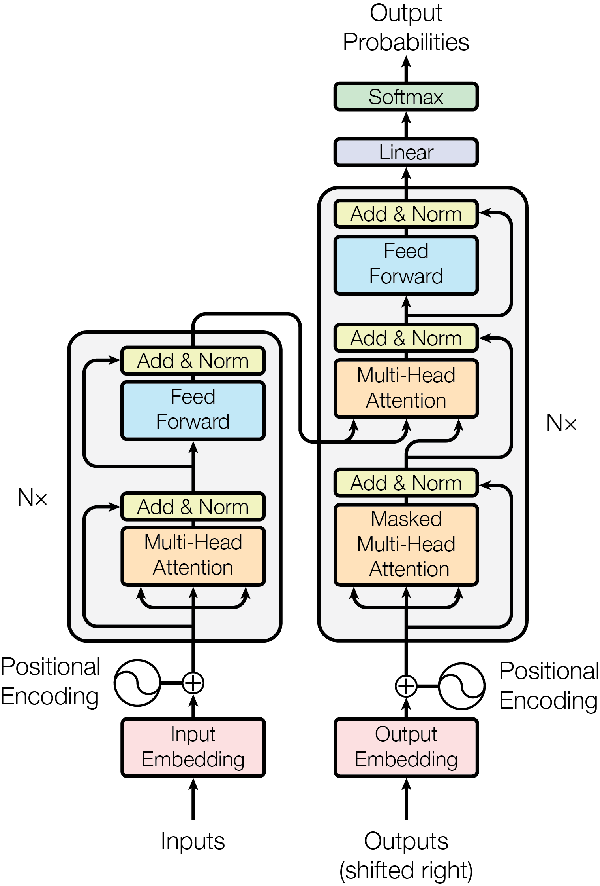

<h1> Lecture #: Class Title <br/> </h1>
<h2> Feed-Forward vs. Recurrent Networks</h2> <ul> <li/> Due to the difficulties of training recurrent neural networks, they are now falling out of favor. <li/> The State-of-the-art language and audio are feed-forward networks </ul>
<h2> Feed-Forward Example For Time-Dependent Data: WaveNet</h2> <ul> <li/> Wavenet is a type of feedforward Convnet. It uses convolutions "à trous" to obtain large receptive fields <div class=row> <div class=column> <img src="images/dilation.gif" /> </div> <div class=column> <img src="images/dilated_wavenet.png" /> </div> </div> <p class=ref> Van der Oord et al. 2016</p> <li/> Learns generative model: $$ p(\mathbf{x}) = \prod_t p(x_t|x_{t-1}, ..., x_0) $$ <li/> Wavenets are the state-of-the-art in audio generation. See <a href="https://deepmind.com/blog/article/wavenet-generative-model-raw-audio"> Google's blog </a>. </ul>
<h2> Feed-Forward Example For Time-Dependent Data: BERT </h2> <ul> <li/> Bert is the state-of-the-art in language modeling. It uses a feedforward "transformers with "self-attention block" to learn relations across text <div class=row> <div class=column>  </div> <div class=column> <img src="images/bert.png" /> </div> </div> <p class=ref> Van der Oord et al. 2016</p> <li/> Trained to predict missing words: ("My dog is [MASK]", predict target "Hairy") and next sentence prediction <div class=row> <div class=column> <blockquote> the man went to [MASK] store [SEP] he bought a gallon [MASK] milk Label = IsNext </blockquote> </div> <div class=column> <blockquote> the man [MASK] to the store [SEP] penguin [MASK] are flight ##less birds Label = NotNext </blockquote> </div> </div> <li/> Wavenets are the state-of-the-art in audio generation. See <a href="https://deepmind.com/blog/article/wavenet-generative-model-raw-audio"> Google's blog </a>. </ul>